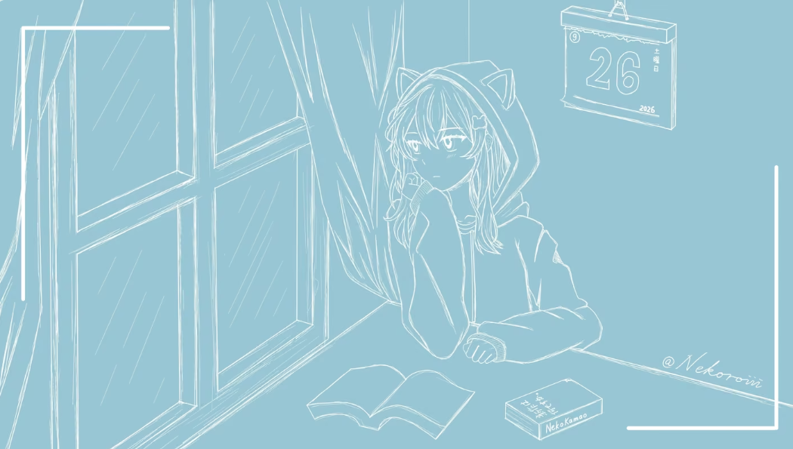

新しい音楽と物語をお届けします。NekoKamao Studio の作品をぜひ聴いてください。


143,082 フォロワー
NekoKamao Studio · バーチャルミュージシャン 虚拟音乐人 / ボカロP
新しい音楽と物語をお届けします。NekoKamao Studio の作品をぜひ聴いてください。
猫かも。とGUMIの対話、そして人間になりたい猫。作品の背景にある物語をご覧ください。



猫かも。の物語をお楽しみください。
猫かも。とGUMIの対話、その続きをご覧ください。
ある時の猫かも。とGUMIの対話。
フォローすると、さらに多くの投稿をご覧いただけます